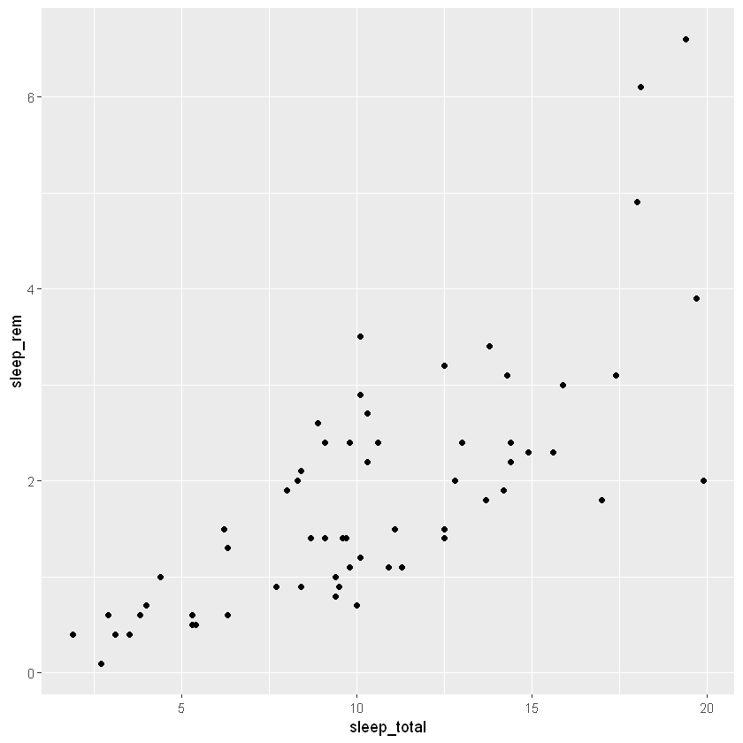
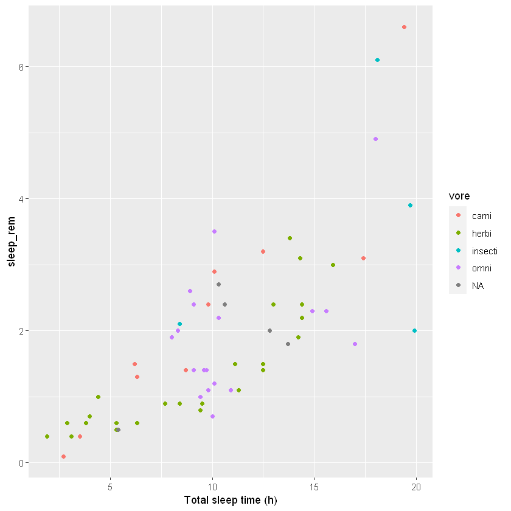

21 Статистичні функції
21.1 Завантаження даних
| msleep {ggplot2} | R Documentation |
An updated and expanded version of the mammals sleep dataset
Description
This is an updated and expanded version of the mammals sleep dataset. Updated sleep times and weights were taken from V. M. Savage and G. B. West. A quantitative, theoretical framework for understanding mammalian sleep. Proceedings of the National Academy of Sciences, 104 (3):1051-1056, 2007.
Usage
msleep
Format
A data frame with 83 rows and 11 variables:
- name
common name
- genus
- vore
carnivore, omnivore or herbivore?
- order
- conservation
the conservation status of the animal
- sleep_total
total amount of sleep, in hours
- sleep_rem
rem sleep, in hours
- sleep_cycle
length of sleep cycle, in hours
- awake
amount of time spent awake, in hours
- brainwt
brain weight in kilograms
- bodywt
body weight in kilograms
Details
Additional variables order, conservation status and vore were added from wikipedia.
| name | genus | vore | order | conservation | sleep_total | sleep_rem | sleep_cycle | awake | brainwt | bodywt |
|---|---|---|---|---|---|---|---|---|---|---|
| <chr> | <chr> | <chr> | <chr> | <chr> | <dbl> | <dbl> | <dbl> | <dbl> | <dbl> | <dbl> |
| Cheetah | Acinonyx | carni | Carnivora | lc | 12.1 | NA | NA | 11.9 | NA | 50.000 |
| Owl monkey | Aotus | omni | Primates | NA | 17.0 | 1.8 | NA | 7.0 | 0.01550 | 0.480 |
| Mountain beaver | Aplodontia | herbi | Rodentia | nt | 14.4 | 2.4 | NA | 9.6 | NA | 1.350 |
| Greater short-tailed shrew | Blarina | omni | Soricomorpha | lc | 14.9 | 2.3 | 0.1333333 | 9.1 | 0.00029 | 0.019 |
| Cow | Bos | herbi | Artiodactyla | domesticated | 4.0 | 0.7 | 0.6666667 | 20.0 | 0.42300 | 600.000 |
| Three-toed sloth | Bradypus | herbi | Pilosa | NA | 14.4 | 2.2 | 0.7666667 | 9.6 | NA | 3.850 |
21.2 Перелік функцій
| Функція | Опис |
|---|---|
range() |
Range (minimum and maximum) of vector |
min(), max() |
Minimum or maximum of vector |
mean(), median() |
Mean or median of vector |
sd() |
Standard deviation of vector |
table() |
Number of observations per level for a factor vector |
cor() |
Determine correlation(s) between two or more vectors |
summary() |
Summary statistics, depends on class |
name genus vore order
Length:83 Length:83 Length:83 Length:83
Class :character Class :character Class :character Class :character
Mode :character Mode :character Mode :character Mode :character
conservation sleep_total sleep_rem sleep_cycle
Length:83 Min. : 1.90 Min. :0.100 Min. :0.1167
Class :character 1st Qu.: 7.85 1st Qu.:0.900 1st Qu.:0.1833
Mode :character Median :10.10 Median :1.500 Median :0.3333
Mean :10.43 Mean :1.875 Mean :0.4396
3rd Qu.:13.75 3rd Qu.:2.400 3rd Qu.:0.5792
Max. :19.90 Max. :6.600 Max. :1.5000
NA's :22 NA's :51
awake brainwt bodywt
Min. : 4.10 Min. :0.00014 Min. : 0.005
1st Qu.:10.25 1st Qu.:0.00290 1st Qu.: 0.174
Median :13.90 Median :0.01240 Median : 1.670
Mean :13.57 Mean :0.28158 Mean : 166.136
3rd Qu.:16.15 3rd Qu.:0.12550 3rd Qu.: 41.750
Max. :22.10 Max. :5.71200 Max. :6654.000
NA's :27 | name | genus | vore | order | conservation | sleep_total | sleep_rem | sleep_cycle | awake | brainwt | bodywt |
|---|---|---|---|---|---|---|---|---|---|---|
| <chr> | <chr> | <chr> | <chr> | <chr> | <dbl> | <dbl> | <dbl> | <dbl> | <dbl> | <dbl> |
| Big brown bat | Eptesicus | insecti | Chiroptera | lc | 19.7 | 3.9 | 0.1166667 | 4.3 | 0.00030 | 0.023 |
| House mouse | Mus | herbi | Rodentia | nt | 12.5 | 1.4 | 0.1833333 | 11.5 | 0.00040 | 0.022 |
| Deer mouse | Peromyscus | NA | Rodentia | NA | 11.5 | NA | NA | 12.5 | NA | 0.021 |
| Greater short-tailed shrew | Blarina | omni | Soricomorpha | lc | 14.9 | 2.3 | 0.1333333 | 9.1 | 0.00029 | 0.019 |
| Little brown bat | Myotis | insecti | Chiroptera | NA | 19.9 | 2.0 | 0.2000000 | 4.1 | 0.00025 | 0.010 |
| Lesser short-tailed shrew | Cryptotis | omni | Soricomorpha | lc | 9.1 | 1.4 | 0.1500000 | 14.9 | 0.00014 | 0.005 |
mean(msleep$sleep_total) # Mean
median(msleep$sleep_total) # Median
max(msleep$sleep_total) # Max
min(msleep$sleep_total) # Min
sd(msleep$sleep_total) # Standard deviation
var(msleep$sleep_total) # Variance
quantile(msleep$sleep_total) # Various quantiles- 0%
- 1.9
- 25%
- 7.85
- 50%
- 10.1
- 75%
- 13.75
- 100%
- 19.9
| name | genus | vore | order | conservation | sleep_total | sleep_rem | sleep_cycle | awake | brainwt | bodywt |
|---|---|---|---|---|---|---|---|---|---|---|
| <chr> | <chr> | <chr> | <chr> | <chr> | <dbl> | <dbl> | <dbl> | <dbl> | <dbl> | <dbl> |
| Cheetah | Acinonyx | carni | Carnivora | lc | 12.1 | NA | NA | 11.9 | NA | 50.000 |
| Owl monkey | Aotus | omni | Primates | NA | 17.0 | 1.8 | NA | 7.0 | 0.01550 | 0.480 |
| Mountain beaver | Aplodontia | herbi | Rodentia | nt | 14.4 | 2.4 | NA | 9.6 | NA | 1.350 |
| Greater short-tailed shrew | Blarina | omni | Soricomorpha | lc | 14.9 | 2.3 | 0.1333333 | 9.1 | 0.00029 | 0.019 |
| Three-toed sloth | Bradypus | herbi | Pilosa | NA | 14.4 | 2.2 | 0.7666667 | 9.6 | NA | 3.850 |
| Northern fur seal | Callorhinus | carni | Carnivora | vu | 8.7 | 1.4 | 0.3833333 | 15.3 | NA | 20.490 |
| Dog | Canis | carni | Carnivora | domesticated | 10.1 | 2.9 | 0.3333333 | 13.9 | 0.07000 | 14.000 |
| Guinea pig | Cavis | herbi | Rodentia | domesticated | 9.4 | 0.8 | 0.2166667 | 14.6 | 0.00550 | 0.728 |
| Grivet | Cercopithecus | omni | Primates | lc | 10.0 | 0.7 | NA | 14.0 | NA | 4.750 |
| Chinchilla | Chinchilla | herbi | Rodentia | domesticated | 12.5 | 1.5 | 0.1166667 | 11.5 | 0.00640 | 0.420 |
| Star-nosed mole | Condylura | omni | Soricomorpha | lc | 10.3 | 2.2 | NA | 13.7 | 0.00100 | 0.060 |
| African giant pouched rat | Cricetomys | omni | Rodentia | NA | 8.3 | 2.0 | NA | 15.7 | 0.00660 | 1.000 |
| Lesser short-tailed shrew | Cryptotis | omni | Soricomorpha | lc | 9.1 | 1.4 | 0.1500000 | 14.9 | 0.00014 | 0.005 |
| Long-nosed armadillo | Dasypus | carni | Cingulata | lc | 17.4 | 3.1 | 0.3833333 | 6.6 | 0.01080 | 3.500 |
| North American Opossum | Didelphis | omni | Didelphimorphia | lc | 18.0 | 4.9 | 0.3333333 | 6.0 | 0.00630 | 1.700 |
| Big brown bat | Eptesicus | insecti | Chiroptera | lc | 19.7 | 3.9 | 0.1166667 | 4.3 | 0.00030 | 0.023 |
| European hedgehog | Erinaceus | omni | Erinaceomorpha | lc | 10.1 | 3.5 | 0.2833333 | 13.9 | 0.00350 | 0.770 |
| Patas monkey | Erythrocebus | omni | Primates | lc | 10.9 | 1.1 | NA | 13.1 | 0.11500 | 10.000 |
| Western american chipmunk | Eutamias | herbi | Rodentia | NA | 14.9 | NA | NA | 9.1 | NA | 0.071 |
| Domestic cat | Felis | carni | Carnivora | domesticated | 12.5 | 3.2 | 0.4166667 | 11.5 | 0.02560 | 3.300 |
| Galago | Galago | omni | Primates | NA | 9.8 | 1.1 | 0.5500000 | 14.2 | 0.00500 | 0.200 |
| Mongoose lemur | Lemur | herbi | Primates | vu | 9.5 | 0.9 | NA | 14.5 | NA | 1.670 |
| Thick-tailed opposum | Lutreolina | carni | Didelphimorphia | lc | 19.4 | 6.6 | NA | 4.6 | NA | 0.370 |
| Macaque | Macaca | omni | Primates | NA | 10.1 | 1.2 | 0.7500000 | 13.9 | 0.17900 | 6.800 |
| Mongolian gerbil | Meriones | herbi | Rodentia | lc | 14.2 | 1.9 | NA | 9.8 | NA | 0.053 |
| Golden hamster | Mesocricetus | herbi | Rodentia | en | 14.3 | 3.1 | 0.2000000 | 9.7 | 0.00100 | 0.120 |
| Vole | Microtus | herbi | Rodentia | NA | 12.8 | NA | NA | 11.2 | NA | 0.035 |
| House mouse | Mus | herbi | Rodentia | nt | 12.5 | 1.4 | 0.1833333 | 11.5 | 0.00040 | 0.022 |
| Little brown bat | Myotis | insecti | Chiroptera | NA | 19.9 | 2.0 | 0.2000000 | 4.1 | 0.00025 | 0.010 |
| Round-tailed muskrat | Neofiber | herbi | Rodentia | nt | 14.6 | NA | NA | 9.4 | NA | 0.266 |
| ⋮ | ⋮ | ⋮ | ⋮ | ⋮ | ⋮ | ⋮ | ⋮ | ⋮ | ⋮ | ⋮ |
| Northern grasshopper mouse | Onychomys | carni | Rodentia | lc | 14.5 | NA | NA | 9.5 | NA | 0.028 |
| Rabbit | Oryctolagus | herbi | Lagomorpha | domesticated | 8.4 | 0.9 | 0.4166667 | 15.6 | 0.01210 | 2.500 |
| Chimpanzee | Pan | omni | Primates | NA | 9.7 | 1.4 | 1.4166667 | 14.3 | 0.44000 | 52.200 |
| Tiger | Panthera | carni | Carnivora | en | 15.8 | NA | NA | 8.2 | NA | 162.564 |
| Jaguar | Panthera | carni | Carnivora | nt | 10.4 | NA | NA | 13.6 | 0.15700 | 100.000 |
| Lion | Panthera | carni | Carnivora | vu | 13.5 | NA | NA | 10.5 | NA | 161.499 |
| Baboon | Papio | omni | Primates | NA | 9.4 | 1.0 | 0.6666667 | 14.6 | 0.18000 | 25.235 |
| Desert hedgehog | Paraechinus | NA | Erinaceomorpha | lc | 10.3 | 2.7 | NA | 13.7 | 0.00240 | 0.550 |
| Potto | Perodicticus | omni | Primates | lc | 11.0 | NA | NA | 13.0 | NA | 1.100 |
| Deer mouse | Peromyscus | NA | Rodentia | NA | 11.5 | NA | NA | 12.5 | NA | 0.021 |
| Phalanger | Phalanger | NA | Diprotodontia | NA | 13.7 | 1.8 | NA | 10.3 | 0.01140 | 1.620 |
| Potoroo | Potorous | herbi | Diprotodontia | NA | 11.1 | 1.5 | NA | 12.9 | NA | 1.100 |
| Giant armadillo | Priodontes | insecti | Cingulata | en | 18.1 | 6.1 | NA | 5.9 | 0.08100 | 60.000 |
| Laboratory rat | Rattus | herbi | Rodentia | lc | 13.0 | 2.4 | 0.1833333 | 11.0 | 0.00190 | 0.320 |
| African striped mouse | Rhabdomys | omni | Rodentia | NA | 8.7 | NA | NA | 15.3 | NA | 0.044 |
| Squirrel monkey | Saimiri | omni | Primates | NA | 9.6 | 1.4 | NA | 14.4 | 0.02000 | 0.743 |
| Eastern american mole | Scalopus | insecti | Soricomorpha | lc | 8.4 | 2.1 | 0.1666667 | 15.6 | 0.00120 | 0.075 |
| Cotton rat | Sigmodon | herbi | Rodentia | NA | 11.3 | 1.1 | 0.1500000 | 12.7 | 0.00118 | 0.148 |
| Mole rat | Spalax | NA | Rodentia | NA | 10.6 | 2.4 | NA | 13.4 | 0.00300 | 0.122 |
| Arctic ground squirrel | Spermophilus | herbi | Rodentia | lc | 16.6 | NA | NA | 7.4 | 0.00570 | 0.920 |
| Thirteen-lined ground squirrel | Spermophilus | herbi | Rodentia | lc | 13.8 | 3.4 | 0.2166667 | 10.2 | 0.00400 | 0.101 |
| Golden-mantled ground squirrel | Spermophilus | herbi | Rodentia | lc | 15.9 | 3.0 | NA | 8.1 | NA | 0.205 |
| Musk shrew | Suncus | NA | Soricomorpha | NA | 12.8 | 2.0 | 0.1833333 | 11.2 | 0.00033 | 0.048 |
| Pig | Sus | omni | Artiodactyla | domesticated | 9.1 | 2.4 | 0.5000000 | 14.9 | 0.18000 | 86.250 |
| Short-nosed echidna | Tachyglossus | insecti | Monotremata | NA | 8.6 | NA | NA | 15.4 | 0.02500 | 4.500 |
| Eastern american chipmunk | Tamias | herbi | Rodentia | NA | 15.8 | NA | NA | 8.2 | NA | 0.112 |
| Tenrec | Tenrec | omni | Afrosoricida | NA | 15.6 | 2.3 | NA | 8.4 | 0.00260 | 0.900 |
| Tree shrew | Tupaia | omni | Scandentia | NA | 8.9 | 2.6 | 0.2333333 | 15.1 | 0.00250 | 0.104 |
| Arctic fox | Vulpes | carni | Carnivora | NA | 12.5 | NA | NA | 11.5 | 0.04450 | 3.380 |
| Red fox | Vulpes | carni | Carnivora | NA | 9.8 | 2.4 | 0.3500000 | 14.2 | 0.05040 | 4.230 |
sum(msleep$sleep_total > 8) # Frequency (count)
mean(msleep$sleep_total > 8) # Relative frequency (proportion)
carni herbi insecti omni
0.25000000 0.42105263 0.06578947 0.26315789 # Counts:
table(msleep$vore, msleep$conservation)
# Proportions, per row:
proportions(table(msleep$vore, msleep$conservation),
margin = 1)
cd domesticated en lc nt vu
carni 1 2 1 5 1 4
herbi 1 7 2 10 3 3
insecti 0 0 1 2 0 0
omni 0 1 0 8 0 0
cd domesticated en lc nt vu
carni 0.07142857 0.14285714 0.07142857 0.35714286 0.07142857 0.28571429
herbi 0.03846154 0.26923077 0.07692308 0.38461538 0.11538462 0.11538462
insecti 0.00000000 0.00000000 0.33333333 0.66666667 0.00000000 0.00000000
omni 0.00000000 0.11111111 0.00000000 0.88888889 0.00000000 0.00000000TASK
Load ggplot2 using library(ggplot2) if you have not already done so. Then do the following:
View the documentation for the diamonds data and read about different the variables.
Check the data structures: how many observations and variables are there and what type of variables (numeric, categorical, etc.) are there?
Compute summary statistics (means, median, min, max, counts for categorical variables). Are there any missing values?
Warning message:
"Removed 22 rows containing missing values (geom_point)."
ggplot(msleep, aes(sleep_total, sleep_rem, colour = vore)) +
geom_point() +
xlab("Total sleep time (h)")Warning message:
"Removed 22 rows containing missing values (geom_point)."
21.3 Інші методи
| vars | n | mean | sd | median | trimmed | mad | min | max | range | skew | kurtosis | se | |
|---|---|---|---|---|---|---|---|---|---|---|---|---|---|
| <int> | <dbl> | <dbl> | <dbl> | <dbl> | <dbl> | <dbl> | <dbl> | <dbl> | <dbl> | <dbl> | <dbl> | <dbl> | |
| name* | 1 | 83 | 42.0000000 | 24.1039416 | 42.0000000 | 42.00000000 | 31.13460000 | 1.0000000 | 83.000 | 82.000000 | 0.00000000 | -1.2434523 | 2.64575131 |
| genus* | 2 | 83 | 40.2530120 | 22.5176589 | 41.0000000 | 40.44776119 | 28.16940000 | 1.0000000 | 77.000 | 76.000000 | -0.05639775 | -1.2520857 | 2.47163416 |
| vore* | 3 | 76 | 2.3421053 | 1.1260862 | 2.0000000 | 2.30645161 | 1.48260000 | 1.0000000 | 4.000 | 3.000000 | 0.41786835 | -1.2479239 | 0.12917095 |
| order* | 4 | 83 | 11.2771084 | 6.1511713 | 15.0000000 | 11.53731343 | 4.44780000 | 1.0000000 | 19.000 | 18.000000 | -0.37717341 | -1.5460760 | 0.67517877 |
| conservation* | 5 | 54 | 3.7777778 | 1.3127340 | 4.0000000 | 3.77272727 | 0.74130000 | 1.0000000 | 6.000 | 5.000000 | -0.13522194 | -0.5048689 | 0.17864046 |
| sleep_total | 6 | 83 | 10.4337349 | 4.4503570 | 10.1000000 | 10.38358209 | 5.04084000 | 1.9000000 | 19.900 | 18.000000 | 0.05230964 | -0.7074466 | 0.48849014 |
| sleep_rem | 7 | 61 | 1.8754098 | 1.2982881 | 1.5000000 | 1.70816327 | 1.18608000 | 0.1000000 | 6.600 | 6.500000 | 1.46161590 | 2.7342493 | 0.16622875 |
| sleep_cycle | 8 | 32 | 0.4395833 | 0.3586801 | 0.3333333 | 0.37628205 | 0.23474500 | 0.1166667 | 1.500 | 1.383333 | 1.49498905 | 1.5749153 | 0.06340629 |
| awake | 9 | 83 | 13.5674699 | 4.4520852 | 13.9000000 | 13.61716418 | 5.04084000 | 4.1000000 | 22.100 | 18.000000 | -0.05133450 | -0.7073810 | 0.48867984 |
| brainwt | 10 | 56 | 0.2815814 | 0.9764137 | 0.0124000 | 0.06602717 | 0.01784309 | 0.0001400 | 5.712 | 5.711860 | 4.62750025 | 20.9636487 | 0.13047877 |
| bodywt | 11 | 83 | 166.1363494 | 786.8397316 | 1.6700000 | 20.48743284 | 2.43442920 | 0.0050000 | 6654.000 | 6653.995000 | 7.10016261 | 53.7180357 | 86.36688086 |
| vars | n | mean | sd | se | Q0.25 | Q0.5 | Q0.75 | |
|---|---|---|---|---|---|---|---|---|
| <int> | <dbl> | <dbl> | <dbl> | <dbl> | <dbl> | <dbl> | <dbl> | |
| name | 1 | 83 | NaN | NA | NA | NA | NA | NA |
| genus | 2 | 83 | NaN | NA | NA | NA | NA | NA |
| vore | 3 | 76 | NaN | NA | NA | NA | NA | NA |
| order | 4 | 83 | NaN | NA | NA | NA | NA | NA |
| conservation | 5 | 54 | NaN | NA | NA | NA | NA | NA |
| sleep_total | 6 | 83 | 10.4337349 | 4.4503570 | 0.48849014 | 7.8500000 | 10.1000000 | 13.7500000 |
| sleep_rem | 7 | 61 | 1.8754098 | 1.2982881 | 0.16622875 | 0.9000000 | 1.5000000 | 2.4000000 |
| sleep_cycle | 8 | 32 | 0.4395833 | 0.3586801 | 0.06340629 | 0.1833333 | 0.3333333 | 0.5791667 |
| awake | 9 | 83 | 13.5674699 | 4.4520852 | 0.48867984 | 10.2500000 | 13.9000000 | 16.1500000 |
| brainwt | 10 | 56 | 0.2815814 | 0.9764137 | 0.13047877 | 0.0029000 | 0.0124000 | 0.1255000 |
| bodywt | 11 | 83 | 166.1363494 | 786.8397316 | 86.36688086 | 0.1740000 | 1.6700000 | 41.7500000 |
21.3.1 Описова статистика для групи
Descriptive statistics by group
vore: carni
vars n mean sd se Q0.25 Q0.5 Q0.75
name 1 19 NaN NA NA NA NA NA
genus 2 19 NaN NA NA NA NA NA
vore 3 19 NaN NA NA NA NA NA
order 4 19 NaN NA NA NA NA NA
conservation 5 14 NaN NA NA NA NA NA
sleep_total 6 19 10.38 4.67 1.07 6.25 10.40 13.00
sleep_rem 7 10 2.29 1.86 0.59 1.33 1.95 3.05
sleep_cycle 8 5 0.37 0.03 0.01 0.35 0.38 0.38
awake 9 19 13.63 4.68 1.07 11.00 13.60 17.75
brainwt 10 9 0.08 0.10 0.03 0.02 0.04 0.07
bodywt 11 19 90.75 182.07 41.77 3.34 20.49 93.00
------------------------------------------------------------
vore: herbi
vars n mean sd se Q0.25 Q0.5 Q0.75
name 1 32 NaN NA NA NA NA NA
genus 2 32 NaN NA NA NA NA NA
vore 3 32 NaN NA NA NA NA NA
order 4 32 NaN NA NA NA NA NA
conservation 5 26 NaN NA NA NA NA NA
sleep_total 6 32 9.51 4.88 0.86 4.30 10.30 14.22
sleep_rem 7 24 1.37 0.92 0.19 0.60 0.95 1.97
sleep_cycle 8 12 0.42 0.32 0.09 0.18 0.22 0.69
awake 9 32 14.49 4.88 0.86 9.78 13.70 19.70
brainwt 10 20 0.62 1.57 0.35 0.01 0.01 0.24
bodywt 11 32 366.88 1244.08 219.92 0.19 1.23 39.00
------------------------------------------------------------
vore: insecti
vars n mean sd se Q0.25 Q0.5 Q0.75
name 1 5 NaN NA NA NA NA NA
genus 2 5 NaN NA NA NA NA NA
vore 3 5 NaN NA NA NA NA NA
order 4 5 NaN NA NA NA NA NA
conservation 5 3 NaN NA NA NA NA NA
sleep_total 6 5 14.94 5.92 2.65 8.60 18.10 19.70
sleep_rem 7 4 3.52 1.93 0.96 2.08 3.00 4.45
sleep_cycle 8 3 0.16 0.04 0.02 0.14 0.17 0.18
awake 9 5 9.06 5.92 2.65 4.30 5.90 15.40
brainwt 10 5 0.02 0.03 0.02 0.00 0.00 0.03
bodywt 11 5 12.92 26.39 11.80 0.02 0.07 4.50
------------------------------------------------------------
vore: omni
vars n mean sd se Q0.25 Q0.5 Q0.75
name 1 20 NaN NA NA NA NA NA
genus 2 20 NaN NA NA NA NA NA
vore 3 20 NaN NA NA NA NA NA
order 4 20 NaN NA NA NA NA NA
conservation 5 9 NaN NA NA NA NA NA
sleep_total 6 20 10.93 2.95 0.66 9.10 9.90 10.93
sleep_rem 7 18 1.96 1.01 0.24 1.25 1.85 2.30
sleep_cycle 8 11 0.59 0.47 0.14 0.26 0.50 0.71
awake 9 20 13.07 2.95 0.66 13.07 14.10 14.90
brainwt 10 17 0.15 0.32 0.08 0.00 0.01 0.18
bodywt 11 20 12.72 24.69 5.52 0.18 0.95 7.60** Refs **
https://www.agroninfo.com/computing-summary-statistics-in-r/